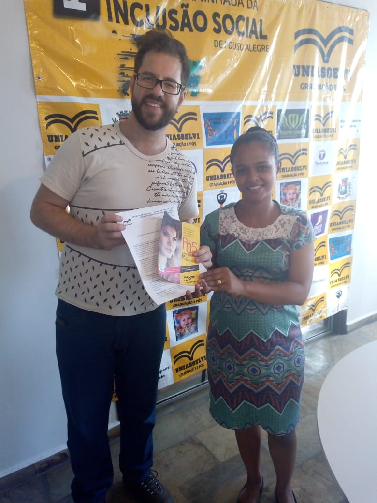
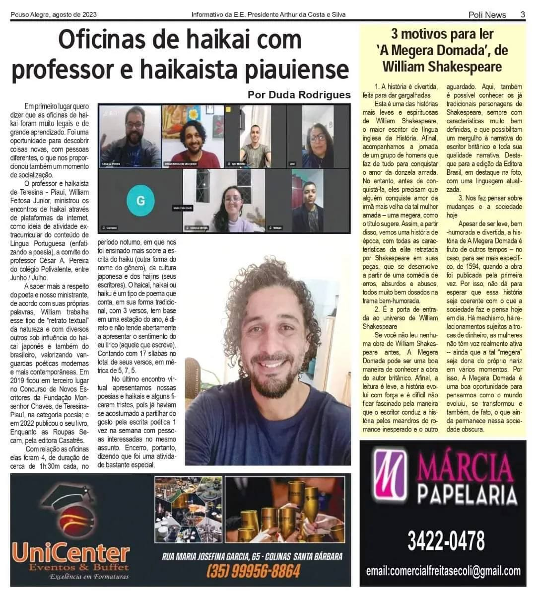

Minha Formação


Formação acadêmica
- Bacharelado em Engenharia de Software — 1º Semestre, pelo Centro Universitário Internacional — UNINTER — Em andamento
- Curso Técnico em Programação Web, pelo Instituto Federal do Rio Grande do Sul — 2024
- Licenciatura em Letras (Português e Literatura) — UNIVAS — 2009
- Pós-Graduação em Metodologias para o Ensino de Línguas — UNINTER — 2013
- Pós-Graduação em Tecnologias Educacionais — UNIASSELVI — 2021
Cursos extras e atividades
- Introdução ao JavaScript – Conceitos básicos de lógica e interações web.
- Projeto UNIVAS/UNILEVER – Monitor de leitura e escrita.
- Extensão Digital UNIVAS/UNESCO – Desenvolvimento de linguagem digital.
- Imersão de Inteligência Artificial na Prática – DAXUS (8h, 2025): conceitos introdutórios de IA e aplicações práticas.
Habilidades técnicas
- Frontend: HTML, CSS, JavaScript.
- Ferramentas: GitHub (uso básico), VS Code.
- Versionamento: Conhecimento básico em Git.
- Idiomas: Português nativo, Inglês intermediário (leitura, escrita e conversação).
- Outros: Word, Excel, PowerPoint, Corel Draw, Access.